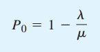
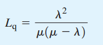
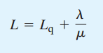
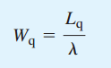
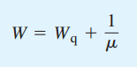
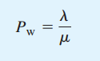
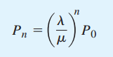
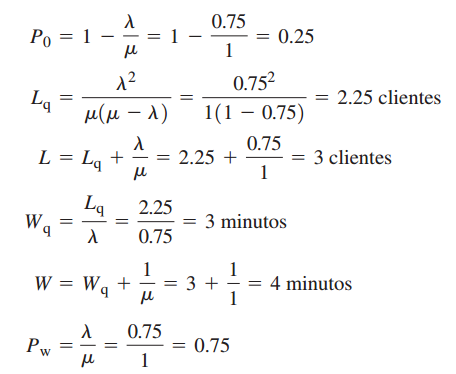

Características de Operación.
Las fórmulas siguientes se utilizan para calcular las características de operación constante de una línea de espera de canal único con llegadas Poisson y tiempos de servicio exponenciales, donde:
- λ = número medio de llegadas por periodo de tiempo (tasa de llegadas)
- μ = número medio de servicios por periodo de tiempo (tasa de servicios)
- La probabilidad de que no haya unidades en el sistema:
- El número promedio de unidades en la línea de espera:
- El número promedio de unidades en el sistema:
- El tiempo promedio que la unidad pasa en la línea de espera:
- El tiempo promedio que una unidad pasa en el sistema:
- La probabilidad de que una unidad que llega no tenga que esperar a ser atendida:
- La probabilidad de que haya n unidades en el sistema:








Características de operación en el problema de Burger Dome
Recuerde que en el problema de Burger Dome teníamos una tasa de llegadas de λ = 0.75 clientes por minuto y una tasa de servicios de μ = 1 cliente por minuto.
Por tanto, con μ > λ, las ecuaciones 1 a 6 pueden usarse para obtener las características de operación de la línea de espera de canal único de Burger Dome:

PROBABILIDAD DE QUE HAYA n CLIENTES EN EL SISTEMA EN EL PROBLEMA DE LA LÍNEA DE ESPERA DE BURGER DOME
| Número de Clientes | Probabilidad |
|---|---|
| 0 | 0.2500 |
| 1 | 0.1875 |
| 2 | 0.1406 |
| 3 | 0.1055 |
| 4 | 0.0791 |
| 5 | 0.0593 |
| 6 | 0.0445 |
| 7 o más | 0.1335 |